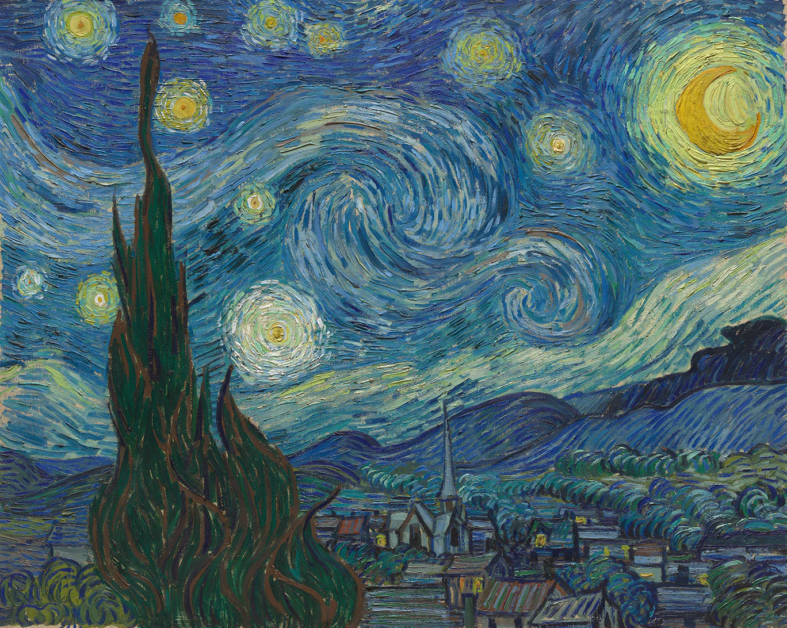

The Starry Night
Starry Night was painted with oil on canvas by Vincent van Gogh in June 1889 while he was living at the Saint-Paul-de-Mausole asylum in Saint-Rémy-de-Provence, France. This iconic masterpiece depicts a swirling night sky over a quiet village, with bold brushstrokes and vivid blues and yellows creating a sense of movement and emotion. Painted from memory rather than direct observation, Starry Night reflects Van Gogh’s inner turmoil and his longing for peace, making it one of the most celebrated works in art history.
Back to Paintings